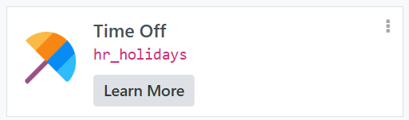
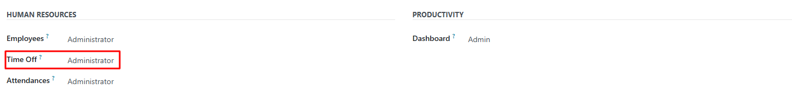
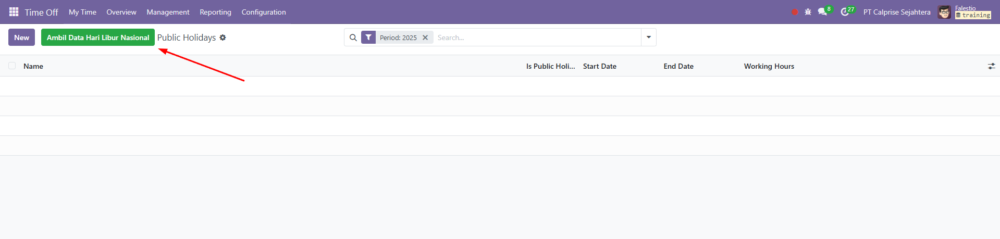
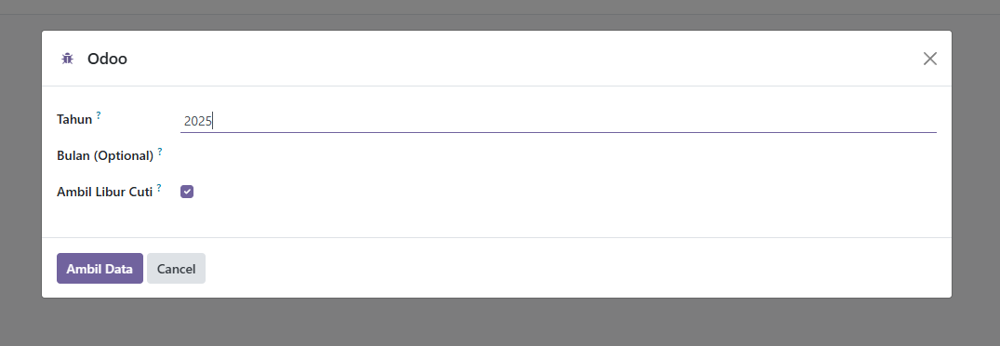
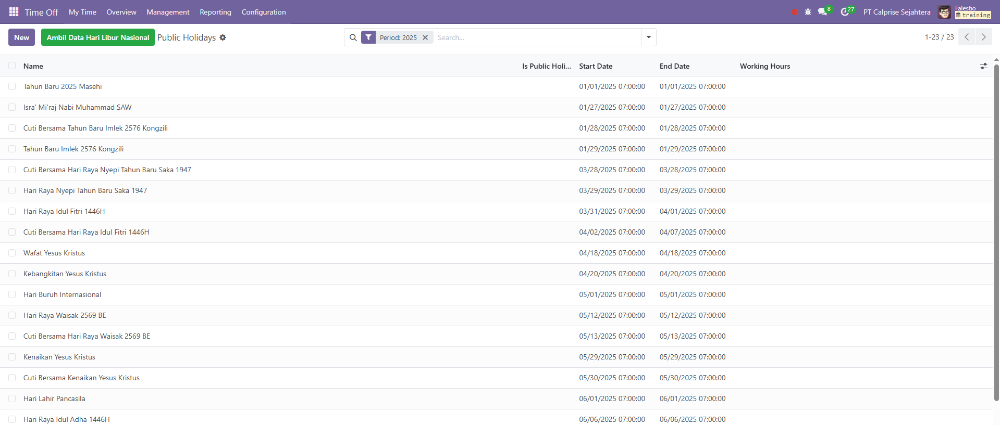

Deskripsi
Modul ini menambahkan tombol untuk mengambil data hari libur nasional Indonesia.
Sumber Data
Modul ini menggunakan https://dayoffapi.vercel.app/api yang dibuat oleh https://github.com/gerinsp
Mengutip dari dokumentasi API:
"API ini mengambil data dari tanggalan.com dengan cara di scraping setiap 1 bulan sekali menggunakan github action."
Dependency
Modul ini memiliki dependency pada modul hr_holidays
Cara Kerja
1. Pastikan user memiliki access right sebagai administrator pada modul Time Off
2. Untuk mengambil data libur baru, pergi ke aplikasi Time off > Configuration > Public Holidays

3. Klik tombol "Ambil Data Hari Libur"
4. Atur Tahun, Bulan, dan apakah ingin mengambil data libur cuti bersama. Lalu Klik "Ambil Data"
5. Data berhasil di tambahkan, jika ada hari libur dengan nama dan tanggal yang sama modul tidak akan membuat data libur tersebut sehingga tidak ada duplikat.
